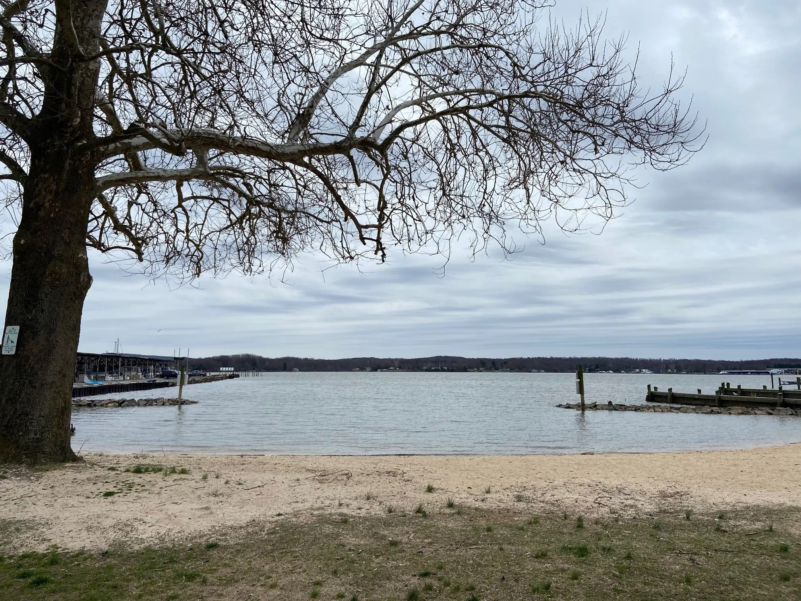
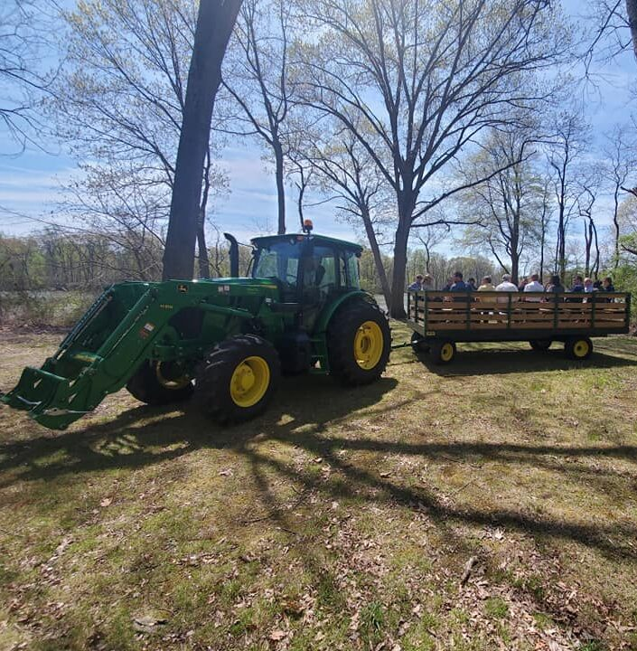
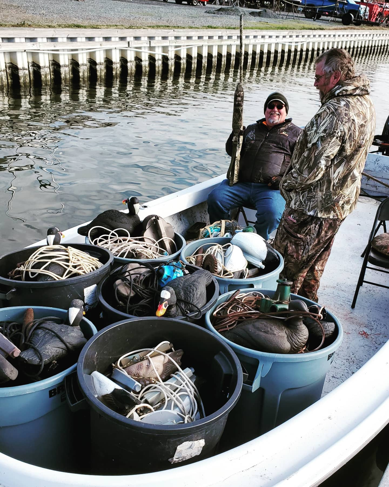
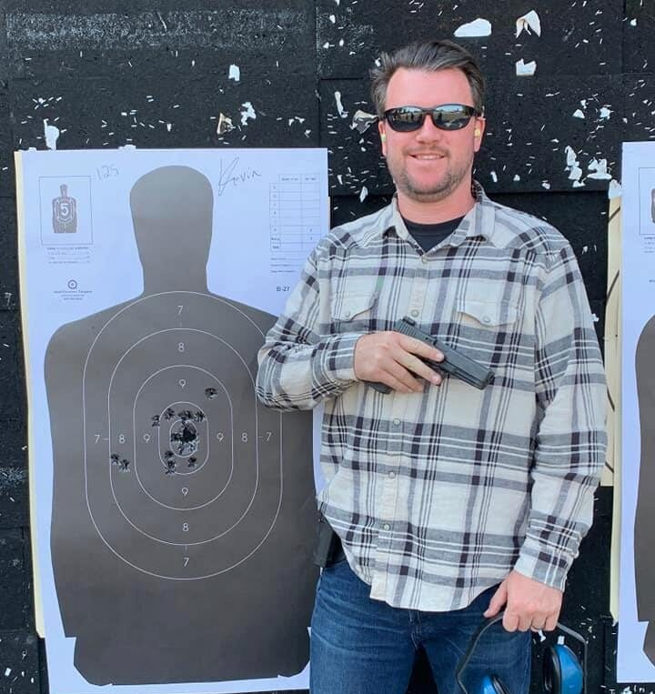
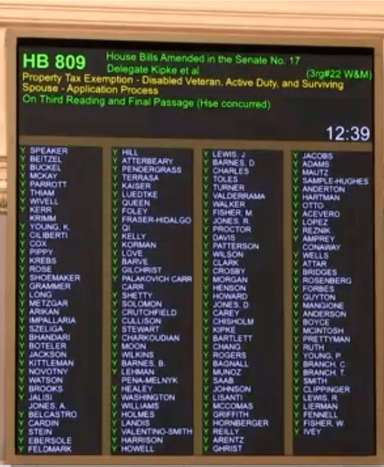
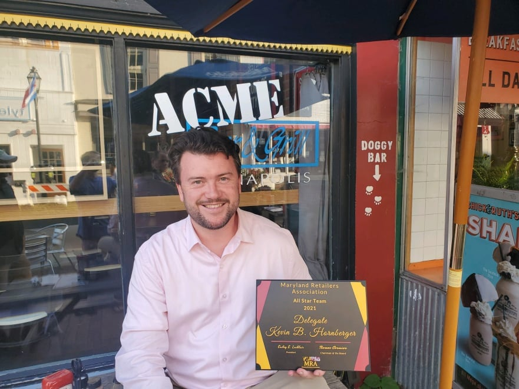
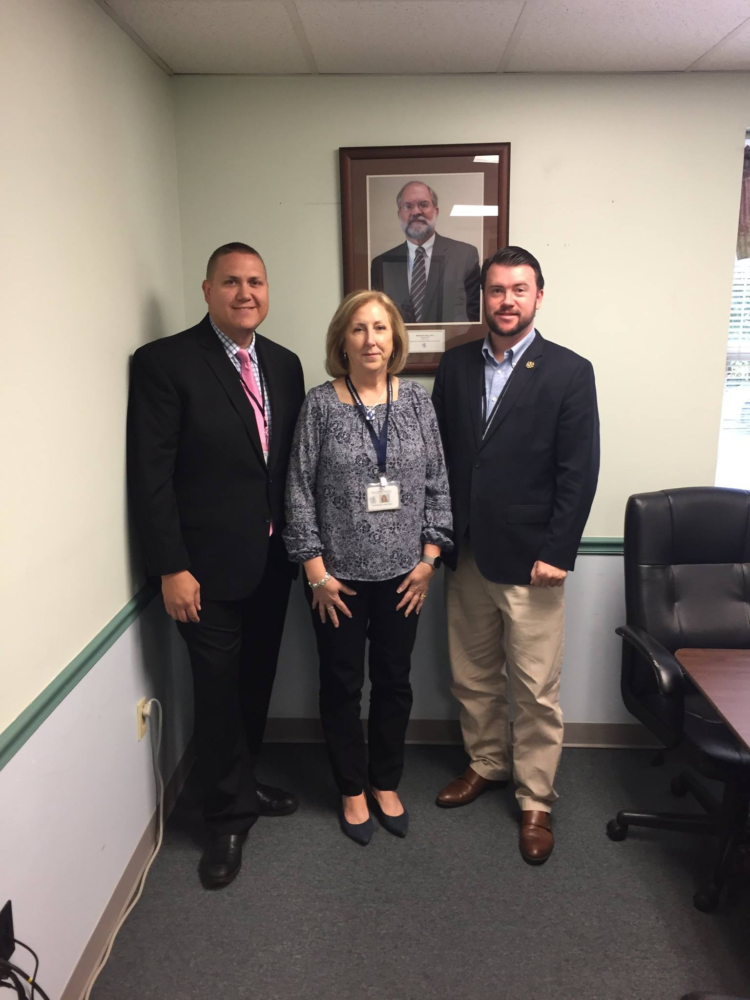
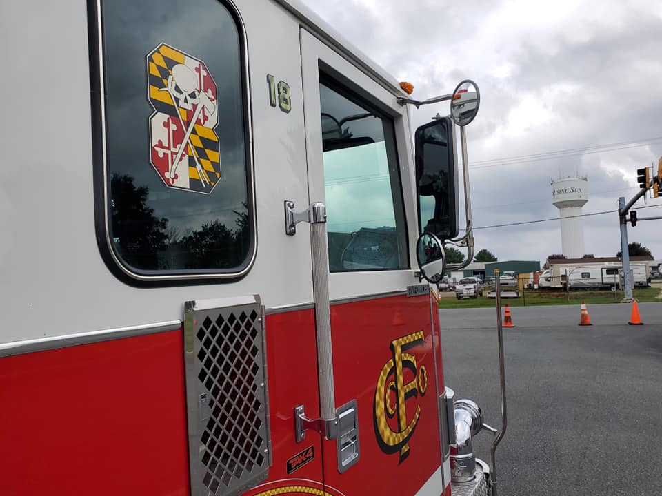
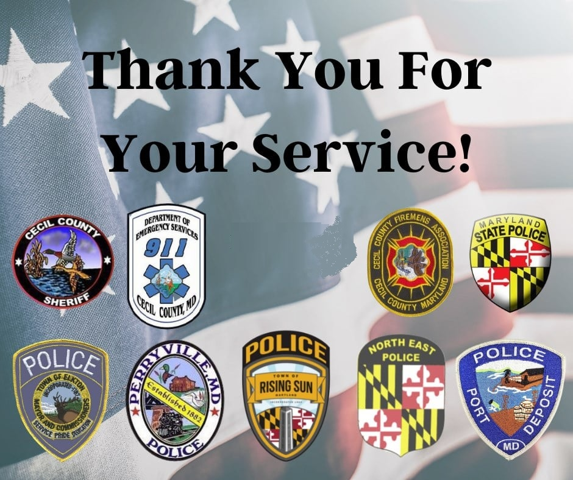

Conservation & Environment
Protecting our natural beauty and the Chesapeake Bay through conservation efforts is not mutually exclusive from supporting farmers. Kevin voted to expand State Parks and has worked with local leaders to prevent future over-development of our backyards. He has been willing to stand up to out-of-state companies trying to take advantage of our environment, and is a staunch advocate for clean water.
2022 SB-541, the Great Maryland Outdoors Act, establishes a new State Park encompassing the historic Tome School campus and the Snow Hill archeological site — preserving open space, local history, and Cecil County’s rural character. After twenty years under lock and key, the public can finally enjoy this outdoor treasure.

Agriculture
Kevin is proud to be a friend of Maryland agriculture, a supporter of local 4-H, and a consistent advocate for farmers and farming in Cecil County. He has been endorsed by the State and local Farm Bureaus for his record of standing with farmers on issues of public policy.
He has personally worked with Eastern Shore farmers on consumer-protection legislation to ensure farm equipment can be repaired, and will keep working for this bedrock industry.

Hunting & Outdoors
Kevin grew up hunting and fishing on the Susquehanna Flats and still enjoys being an outdoorsman today. As Chair of the Maryland Legislative Sportsmen’s Caucus, he worked with the Cecil Delegation to make our county one of the most sportsman-friendly jurisdictions in Maryland.
- NO on 2026 HB-1067 — lead ammunition phase-out
- YES on 2026 HB-1063 — Sunday waterfowl hunting

Second Amendment
Kevin has consistently voted to support the individual right to bear arms. He believes the Second Amendment is quite clear when it says “shall not be infringed.” He voted NO on Red Flag Laws and supports repealing the Firearm “Safety” Act of 2013, which makes lawful handgun ownership far too difficult for the average citizen. The natural right of self-defense is for everybody — from all walks of life.
- NO on 2026 SB-334/HB-577 — machine-gun convertible pistols
- NO on 2018 HB-1302 — Red Flag Laws

Taxes
Kevin is proud to have helped deliver tax relief during his time in the General Assembly — but leadership in Annapolis still isn’t getting the message. We lose citizens every day to neighboring states.
He supports ending ALL taxes on retirement income, repealing the inflation tax on gas, and expanding tax reductions for veterans and first responders. Given Maryland’s geography, he also supports cutting the State sales tax and income tax to make us regionally competitive.

Business & Economy
Endorsed by the Maryland Free Enterprise Foundation as a pro-business legislator, Kevin believes entrepreneurs deserve a streamlined, painless process to enter the market and stay in business — and that our labor force deserves a thriving jobs market with a responsive State government.
He will NEVER support a return of the type of lockdowns that destroyed so many small businesses and livelihoods in 2020.
- NO on 2025 HB-352 — tax hike
- NO on 2020 HB-732 — digital tax

Health
Part of the challenge in Annapolis is ensuring rural healthcare providers are not left behind in the policy-making process. Kevin has consistently worked with and passed legislation on behalf of rural providers like Upper Bay Health so Cecil County is never put at a disadvantage.
He believes COVID-19 should have been taken seriously without devastating lockdowns, and is 100% opposed to any vaccine mandates or passports — vaccination is a decision better made by the individual, independent of government.

Fire & EMS
Our first responders face real challenges in the field, including appropriate funding for modern emergencies. With the help and support of several EMS organizations, Kevin took the lead on passing a long-overdue increase in EMS transport reimbursements — the first since 1999 — now including calls where a patient is not transported to a hospital.
Education
Our society needs to get over the myth that every single student needs a 4-year bachelor’s degree. Working with blue-collar education advocates, Kevin passed greater access to already-existing scholarship funds for tradespeople, truck drivers, and everyday working citizens.
He has consistently voted to increase education funding every year, including through the BOOST program — but voted NO on Kirwan because of its astronomical spending increase and accountability problems.

Law Enforcement & Police
Kevin sponsored legislation to automatically remove frivolous, unfounded complaints against law-enforcement officers from their files after a three-year statute of limitations — protecting good officers from internal retaliation and bad-faith complaints. The bill has earned bipartisan support.
Kevin is proud to be supported by SLEOLA and will continue his record of backing police against over-prescriptive, misguided “reform” from Annapolis.